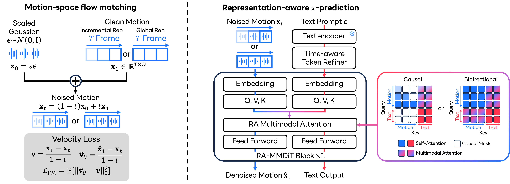

Case 1
Zero-Shot Controla person makes a high kick with the left leg
Recent advances in diffusion and flow models have substantially improved text-driven human motion generation. Yet most methods generate in low-dimensional, temporally downsampled latent spaces learned primarily for reconstruction, a bottleneck that can limit generation quality and preclude direct manipulation of individual frames and joints. We introduce MotionSpaceFlow (MSFlow), a representation-aware flow-matching framework that predicts clean motion directly in continuous motion space without a learned encoder or decoder. To account for the anisotropic structure of direct motion representations, we propose representation-aware noise scaling and show how the initial Gaussian source scale governs the covariance of intermediate probability-path marginals. We further introduce a Representation-Aware Multimodal Diffusion Transformer (RA-MMDiT), which jointly updates token-level language and full-resolution motion features through joint attention while adapting temporal information flow to the motion representation: causal attention for incremental features defined by frame-to-frame changes, and bidirectional attention for global features such as absolute joint coordinates. Across different datasets and motion representations, MSFlow achieves state-of-the-art text-to-motion performance. Its global representation variant additionally enables zero-shot, inference-time control over any joint or frame through projection sampling without control-conditioned training, delivering leading motion quality with exact constraint satisfaction.

MSFlow acts directly on full-resolution motion. A clean sequence in either incremental 263D features or global XYZ coordinates is interpolated with a scaled Gaussian source, and RA-MMDiT predicts the clean endpoint from the noised motion and token-level text. The temporal attention graph follows the representation: causal attention promotes forward-consistent dependencies for incremental features, while bidirectional attention provides the two-sided context needed by globally coupled absolute coordinates. Clean-endpoint predictions are converted into an ODE velocity for sampling. For XYZ motion, projection sampling can enforce any-joint, any-frame spatial constraints at inference without control-conditioned training.
Any-joint, any-frame constraints introduced only at inference through projection sampling.
a person makes a high kick with the left leg
a person walks forward while raising their right arm
a person gets on their hands and knees and crawls forwards.
a person raises both hands into fists, turns sideways and punches out with their left hand, then lowers both hands.
a person does jumping jacks.
this person runs in a circle clockwise
a man performs a squat while lifting his arms to shoulder height and hands above his head.
a person bends forward in a bowing motion.
a person performing a clean cartwheel
a person leaps forward then stands straight.
Qualitative HumanML3D comparisons with continuous-latent baselines.
a man performs a squat and raises both arms forward.
a person seeming to be standing up reaching down with right hand seeming to be checking phone and placing it back down to pocket.
a person stands with legs shoulder-width apart, slightly bent at the knees, arms outstretched at shoulder height, lowers left arm for several seconds, then brings with arm back to shoulder height.
a person walks forward then turns around to the right and returns.
a person makes sideways steps to the right, and then to the left.
the person was laying down and then they got up.
Direct generation with causal incremental 263D features and bidirectional global XYZ coordinates.
person appears to be dancing with another person while his right hand is on the person's back and their right hand is extended appears to be holding their parnter's extended hand
a person standing up puts their hands together at clavicle height level, then performs a low velocity kick with their right leg one time.
a person has his arms extended, brings them down and jogs on the spot before standing still
a person at a standstill starts running, then stops.
a person stands still for a moment, and then staggers forward.
the man performed a tennis smash that won the match.
MSFlow trained directly on the dataset's native 296D representation.
The person steps forward with his hand bent near their chest and lowers it. Then bending their knees while stepping backward, raise their bent hands to the face, and then straighten.
A person raises forward his right hand and rotates his right wrist at shoulder level. Then he outrageously releases something from his right hand and lowers his arm.
The person imitates a zombie. They put their arms forward, tilt their body slightly downward, and walk wobbly forward, then wobbly step backward and level off while standing still.
The person stands in a neutral resting position, pursing their lips. Then they leisurely start running and hopping forward at a place, swinging their arms and looking around contentedly.
The person stands still and tilts his or her torso to the left. Then they straighten up by taking a step to the right and turning their head to the left.
The person stands straight and walks forward with a model-like gait.
The person stands upright and makes waves with their arms. They abruptly raise their right arm to shoulder height, lower their right arm, and simultaneously raise their left arm. Then they repeat the hand movements.
The person stands up and turns to their right, raises and lowers their arms. The person then walks aggressively in a circle. The person then stops and raises their arms.
@article{yu2026msflow,
title={MotionSpaceFlow: Representation-Aware Flow Matching in Direct Motion Space},
author={Yu, Qing and Fujiwara, Kent},
journal={arXiv preprint},
year={2026}
}